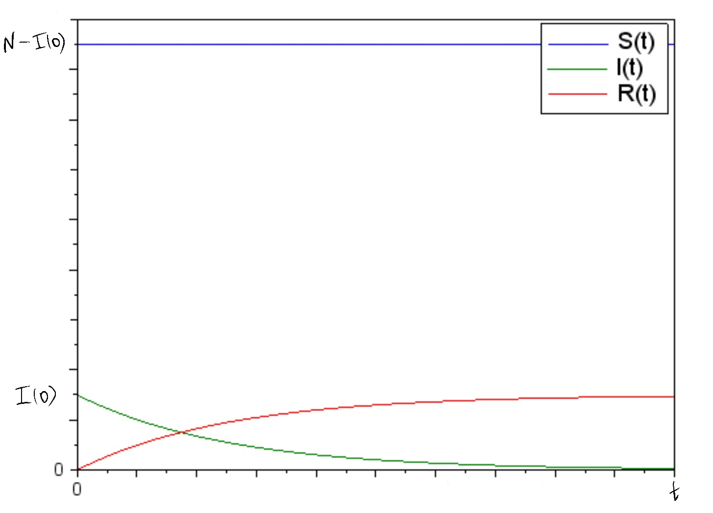

Групповой проект <Этап 1>
Co-authors: Smorodova D., Shutenko V., Surtzov S. and Firtsov I.
Модель
Модель $SIR$
-
Компартментная
-
$S \rightarrow I \rightarrow R$, где $S$ - число особей, восприимчивых к болезни
-
Переменные $S, I, R$ кол-во людей в каждой группе в определенное время/состояние системы, следовательно они функции от времени $S(t), I(t), R(t)$
-
Система задается:
- $N -$ число особей в популяции
- $S(0) -$ число восприимчивых к болезни особей на момент начала эпидемии
- $I(0) -$ число инфицированных особей на момент начала эпидемии
- По умолчанию $R(0)=0$, $R(0) -$ число особей с иммунитетом к болезни на момент начала эпидемии
- $I^* -$ критическое значение заболевших
Описание системы (уравнения)
Система 1. Скорость изменения числа особей, восприимчивых к болезни
$$\frac{dS}{dt} = \begin{cases} -\alpha S, I(t) > I^* \ 0, I(t) \leq I^*\end{cases} $$
-
$S -$ число особей, восприимчивых к болезни
-
$\alpha$ - коэффициент заболеваемости
-
$I(t) -$ число инфицированных особей в момент времени $t$
-
$I^* -$ критическое значение заболевших
Система 2. Скорость изменения числа инфекцированных особей
$$\frac{dI}{dt} = \begin{cases} \alpha S - \beta I, I(t) > I^* \ - \beta I, I(t) \leq I^*\end{cases} $$
-
$S -$ число особей, восприимчивых к болезни
-
$\alpha$ - коэффициент заболеваемости
-
$\beta$ - коэффициент выздоровления
-
$I(t) -$ число инфицированных особей в момент времени $t$
-
$I^* -$ критическое значение заболевших
Уравнение скорости изменения выздоравливающих особей
$$\frac{dR}{dt} = \beta I $$
-
$\beta$ - коэффициент выздоровления
-
$I -$ число инфицированных особей
Уравнение при условии закрытия границ города
$$ I(t) + S(t) + R(t) = const = N $$
-
$I(t) -$ число инфицированных особей в момент времени $t$
-
$S(t) -$ число восприимчивых к болезни особей в момент времени $t$
-
$S(t) -$ число особей с иммунитетом к болезни в момент времени $t$
-
$N -$ число жителей города
Исследование модели
 { #fig1: width=80% }
{ #fig1: width=80% }
Особые случаи
- $I(t) < I^*$, $R(t)\uparrow$ при $t\uparrow$ и $S(t)=const$ при $\forall t$
{ #fig1: width=80% }
-
Параметр $\alpha$ - коэффициент заболеваемости влияет на то, как быстро произойдет пик количества заболевших (чем больше $\alpha$, тем раньше пик, а чем раньше пик, тем он больше, так как меньше людей с иммунитетом)
-
$\alpha=0$
- $S(t)=const=S(0)$ $\Rightarrow$ $\frac{dI}{dt}<0$ при $\forall t$
- $-\frac{dI}{dt}=\frac{dR}{dt}$
- $|\frac{dI}{dt}|\downarrow$ при $t\uparrow$
-
$\alpha=1$
- мгновенный пик количества заболевших
- $\lim_{t\to0^+}S(t)=0$
- $\lim_{t\to0^+}I(t)=N$
- и затем сразу же $-\frac{dI}{dt}=\frac{dR}{dt}$, $|\frac{dI}{dt}|\downarrow$ при $t\uparrow$
-
Параметр $\beta$ - коэффициент выздоровления влияет на то, как быстро количество зараженных/больных стремиться к нулю
-
$\beta=0$
- $R(t)=const=0$
- $I(t)\rightarrow N$, $S(t)\rightarrow 0$
- $I(\infty)=const=N$
-
$\beta=1$
- мгновенное исцеление
- $\lim_{t\to0^+}I(t)=0$
- $\lim_{t\to0^+}R(t)=I(0)$
Анализ
- $\alpha<\beta$
- при $S \leq 2I$ выздоравливают быстрее чем заражаются $\Rightarrow$ эпидемия затухает
- при $S > 2I$ заражаются быстрее чем выздоравливают $\Rightarrow$ эпидемия разгорается
- $\alpha>\beta$
- при $S \geq 2I$ заражаются быстрее чем выздоравливают $\Rightarrow$ эпидемия разгорается
- при $S < 2I$ выздоравливают быстрее чем заражаются $\Rightarrow$ эпидемия затухает
- $\alpha=\beta$
- при $S > 2I$ заражаются быстрее чем выздоравливают $\Rightarrow$ эпидемия разгорается
- при $S < 2I$ выздоравливают быстрее чем заражаются $\Rightarrow$ эпидемия затухает
- при $S = 2I$ $\Rightarrow$ $\frac{dI}{dt}=\frac{dR}{dt}$ и $\frac{dR}{dt} \geq 0$ $\forall t$ $\Rightarrow$ $\frac{dI}{dt} \geq 0$ $\Rightarrow$ состояние невозможно поддерживать, так как $\frac{dS}{dt} \leq 0$ $\forall t$
Ассимтотические исследования
- Так как в нашей модели отсутсвует повторная заболеваемость, то чем дольше длиться эпидемия
- $R(t)\uparrow$ и $S(t)\downarrow$ $\Rightarrow$ $I(t)\downarrow$
- Причем, при длительной эпидемии пик количества заболевших пройден, а следовательно $\frac{dI}{dt}<0$ и $|\frac{dI}{dt}|\downarrow$
- А если $I(t)\downarrow$ то $\frac{dR}{dt}\downarrow$
- Таким образом $I(\infty) \rightarrow 0$ и $R(\infty) \rightarrow N$ $\Rightarrow$ $S(\infty)\rightarrow 0$
Задача
Случай а) начальное число зараженных/болеющих меньше критического
Известно, что из всех проживающих в городе $(N=10000)$ в момент начала эпидемии $(t=0)$ число заболевших испанкой людей (являющихся распространителями инфекции) $I(0)= 20$, А число здоровых людей с иммунитетом к болезни $R(0)=0$. Таким образом, число людей восприимчивых к болезни, но пока здоровых, в начальный момент времени $S(0) = N-I(0)= 9980$. Считаем, что после выявления болезни, город сразу же закрыли. При этом коэффициент заболеваемости $\alpha$ = 0.1, а коэффициент выздоровления $\beta$ = 0.05.
Случай б) начальное число зараженных/болеющих больше критического
Известно, что из всех проживающих в городе $(N=10000)$ в момент начала эпидемии $(t=0)$ число заболевших испанкой людей (являющихся распространителями инфекции) $I(0)= 3000$, А число здоровых людей с иммунитетом к болезни $R(0)=0$. Таким образом, число людей восприимчивых к болезни, но пока здоровых, в начальный момент времени $S(0)=N-I(0)=7000$. Считаем, что после выявления болезни, город сразу же закрыли. При этом коэффициент заболеваемости $\alpha$ = 0.1, а коэффициент выздоровления $\beta$ = 0.05.
Система в условиях нашей задачи
$$\frac{dS}{dt} = \begin{cases} - 0.1 * S, I(t) > I^* \ 0, I(t) \leq I^*\end{cases} $$
-
$S -$ число особей, восприимчивых к болезни
-
$I(t) -$ число инфицированных особей в момент времени $t$
-
$I^* -$ критическое значение заболевших
$$\frac{dI}{dt} = \begin{cases} - 0.1 * S - 0.05 * I, I(t) > I^* \ - 0.05 * I, I(t) \leq I^*\end{cases} $$
-
$S -$ число особей, восприимчивых к болезни
-
$I(t) -$ число инфицированных особей в момент времени $t$
-
$I^* -$ критическое значение заболевших
$$\frac{dR}{dt} = 0.05 * I $$
- $I -$ число инфицированных особей
$$ I(t) + S(t) + R(t) = const = N = 10000 $$
-
$I(t) -$ число инфицированных особей в момент времени $t$
-
$S(t) -$ число восприимчивых к болезни особей в момент времени $t$
-
$S(t) -$ число особей с иммунитетом к болезни в момент времени $t$
-
$N -$ число жителей города
Библиография
- Compartmental models in epidemiology - https://en.wikipedia.org/wiki/Compartmental_models_in_epidemiology
- А.В. Гаврилина , С.В. Соколов - Анализ SIR-модели распространения заболеваний, pp 229-232, 2018.